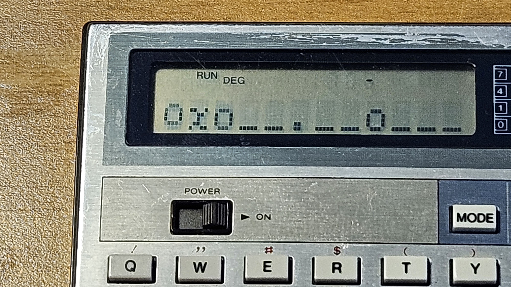
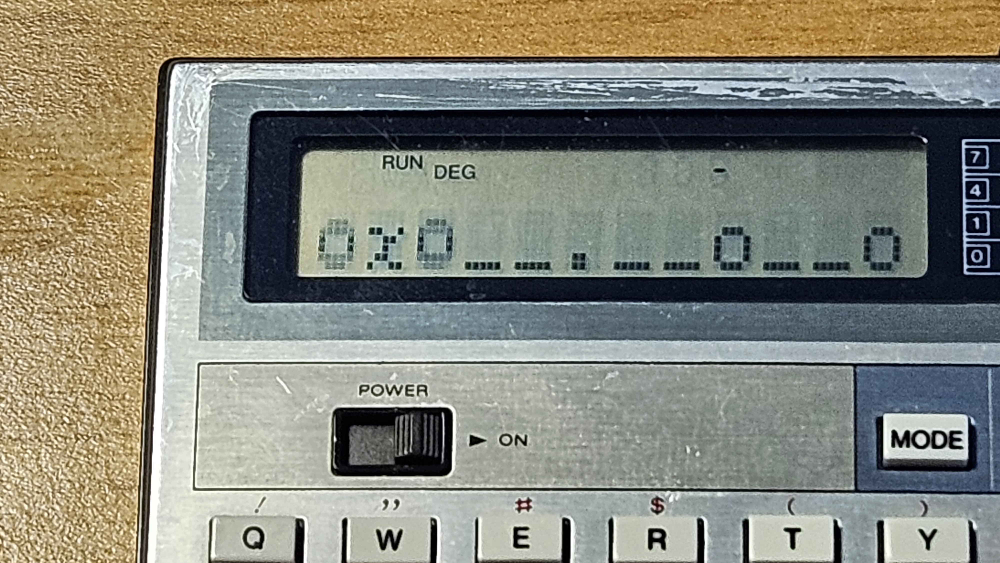
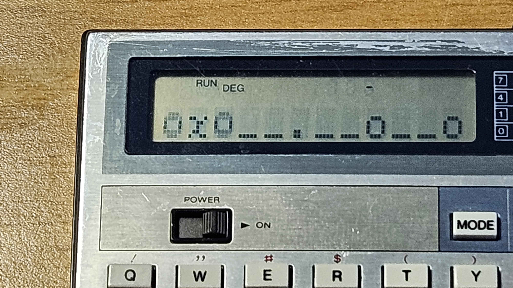

MOON PATROL like game on unexpanded Computer CASIO PB-100
 

Documents hosted here:
moonpatrol.txt [this page]Video Example of gameplay [mp4]
************************************************************
MOON PATROL "like" game for unexpanded Computer CASIO PB-100
by P-LAB 2026
************************************************************
GAMEPLAY:
As in the original game by Williams Electronics, our lunar jeep bounces across the surface of the moon.
The aim of the game is to complete all 10 levels of increasing difficulty with only three lives available.
To do this, you need to jump over the smaller rocks (J key), but only when they are close.
The larger boulders cannot be jumped over but must be destroyed by pressing the F (Fire) key.
It is possible to destroy large boulders even when they are distant and there are small boulders in between.
NOTES TO THE PROGRAM LISTING
Please type in the correct graphic characters between double brackets in the following lines:
lines 14, 24 --> the "o" is the lowercase, in extended mode, press MODE . o keys. This char is the "boulder" obstacle.
line 16 --> the "O-o" is the first frame of the vechicle animation. Press: MODE . SHIFT A then X then O
line 17 --> the "o-O" is the second frame of the vechicle animation. Press: MODE . O then X then SHIFT A
line 18 --> the "o-o" is the frame of the vehicle jump. Press MODE . then SHIFT A, then SHIFT F, then SHIFT A
Please type in the correct operators for the "not equal to" and "greater or equal to" in the following lines:
line 7, 9, 13 --> the two characters "<>" listed below must be substituted with the single character "not equal to" by pressing SHIFT =
line 10 --> the two characters ">=" listed below must be substituted with the single character "greater or equal to" by pressing SHIFT +
line 14 --> to complete the line delete some extra space between keywords
P0 LISTING (At the end typing there should be 8 "steps" (bytes) of RAM left)
PREPARATION AND VARIABLES SETTING
Before running the game, issue the three commands below, either in RUN or WRT mode.
DEFM 1
G$="STAGE="
H$="LIVES="
2 FOR I=1 TO 8: R$(I)="_":NEXT I:L=1:B=0:E=0:D=0:F=3
3 PRINT G$;L;" GO!"
5 GOSUB 16
6 FOR I=0 TO 8: R$(I)=R(I+1):PRINT CSR(I+3);R$(I);:NEXT I
7 D=D+1:C$=KEY:IF C$="J";IF R$(0)<>"o";GOTO 18
8 IF C$="F";GOSUB 23
9 IF R$(0)<>"_" THEN 19
10 IF D>=100;GOSUB 27
11 GOSUB 17
12 R$(9)="_":B=B+1
13 IF B<>3 THEN 5
14 B=0:A=INT(RAN#*(99-L*7)):IF A<40;R$(9)=".":IF A<10;R$(9)="o"
15 GOTO 5
16 PRINT CSR0;"O-o";:RETURN
17 PRINT CSR0;"o-O";:RETURN
18 PRINT CSR0;"o-o";:R$(0)="_":GOTO 6
19 PRINT "CRASH!":F=F-1
20 GOSUB 31
21 IF F=0;PRINT "GAME OVER":END
22 GOTO 2
23 FOR J=0 TO 8
24 IF R$(J)="o";PRINT CSRJ+3;"*";:R$(J)="_":RETURN
26 NEXT J:RETURN
27 PRINT G$;L;" OK!":L=L+1
28 D=0:
29 IF L=11;PRINT "FINISH!":L=L-1:GOSUB 31:END
30 GOTO 2
31 E=E+D:PRINT H$;F;" ";G$;L;" P=";E:RETURN
VARIABLES LIST:
C$ = Key pressed by the player
D = Partial Score
E = Total Score
F = Lives counter
G$ = Fixed String with the value "STAGE=" to save program RAM
H$ = Fixed String with the value "LIVES=" to save program RAM
I = Index for terrain shifting cycle
J = Index for boulder interception cycle
L = Game level
R$() = Terrain Array
This work is licensed under CC BY 4.0